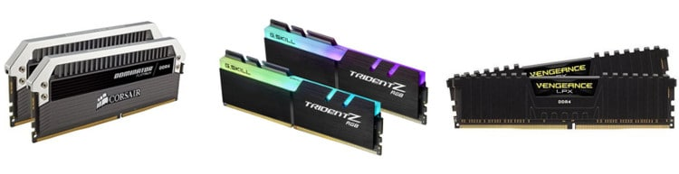

Kako sklopiti svoj racunar

Kod kupovine delova racunara, bitno je imati u vidu kojoj ce svrsi taj racunar sluziti. Mi cemo pricati o komponentama koje se koje su namenjene takozvanom mainstreamu, tj. Grupi u koji spade vecina korisnika. U slucaju u kojem se tacno zna za kakve zadatke ce se racunar korisiti, ili jos preciznije koji ce se programi koristiti, korisnici obicno imaju izbore izmedju dve platforme u vidu procesora marke intel ili AMD, kao I ozbor izmedju nvidia i AMD grafickih kartica. Neki programi su naklonjeniji jednima a neki drugima, I u slucaju da korisnik zna tacno za sta ce se koristiti na osnovu toga sklapa konfiguraciju.
Procesor

Procesor predstavlja mozak racunara, I kao takav je jedan od delova koji stoje u samoj srzi konfiguracije, I oko njega se obicno vrti izbor ostalih delova. Postoji sirok spektar procesora kod oba proizvodjaca, koji se krece od dvojezgarnih procesora koji se obicno nalaze u jeftinijim masinama I nisi pogodni za jace zadatke pa sve do osmojezgarnih procesora na vrhu mainstream ponude namenjenim intenzivnijim zadacima.
Maticna ploca
Na osnovu odabira procesora, bira se i maticna ploca, koja kao nervni sistem povezuje sve delove racunara, i omogucava im da medjusobno komuniciraju. Buduci da svaki procesor zahteva odgovarajuce leziste I cip koji ga podrzavaju, mora se posbeno voditi racuna o tome da oni budu kompatibilni. U zavisnosti od kombinacije maticne ploce I procesora, mogu se izvuci dodatne performanse putem takozvanog overklokovanja gde se povecava frekvencija na kojoj procesor radi, ali koja zahteva dodatno hladnjenje putem jacih kulera zanovanih na vazdusnom ili cak I vodenom hladnjenju.
RAM memorija
RAM memorija predstavlja svest racunara u smislu da je to takoreci “privremena” memorija koja odrzava trenutne funkcije koje se obavljaju na racunaru. U danasnje vreme uobicajena kolicina RAM memorije krece se od 4 gigabajta pa sve do 32 ili 64 u slucajevima kada je neophodna za specificne zadatke, I ona predstavlja najmanju brigu u vezi kompatibilnosti buduci da danas vecina ram stickova rade na svim platformama.
Drajvovi
Za cuvanje podataka potrebno je nabaviti hard disk ili neki od ssd ili nvme drajvova, od kojih su prvi jeftiniji ali I sporiji dok su drugi dosta brzi ali mogu biti I puno skuplji. Obicno se hard diskovi koriste za cuvanje vece kolicine podataka, dok se ssd I nvme obicno koriste kao boot drajvovi ili u slucajevima gde je vise izrazena potreba za njihvom vecon brzinom pisanja I citanja podataka.
Graficka kartica
Kao drugu kljucnu komponentu imamo graficku karticu, bez koje je nemoguce postici vizuelizaciju svega neophodnog za rukovanje racunarom. Neki procesori u sebi poseduju integrisanu graficku karticu, pa im nije neophodna odvojena graficka za ovaj zadatak, ali su integrisane uvek slabijih performansi. U danasnje vreme glavna svrha grafickih karti jeste za pokretanje zahtevnih video igara koji svake godine postizu sve lepse vizuelne rezultate, ali koje takodje zahtevaju jak hardver koji to moze postici.
Napajanje
U zavisnosti od kolicine energije koja je neophodna za napajanje delova koji se koriste, bira se napajanje. Vecina gotovih konfiguarcija dolazi sa slabijim napajanjima, ali buduci da se obicno koriste za svakodnevnu upotrebu poput gledanja filmova I pretrazivanja internet to obicno ne predstavlja problem. Sa druge strane, jace graficke I procesori namenjeni gejmingu, renderovanju I ostalim zahtevnijim zadacima traze vecu kolicinu energije, I u slucaju da anapajanje nije u stanju da ispuni svoj zadatak moze doci do fatalnog kvara, u najgorem slucaju I do pozara koji moze unisiti ceo racunar I napraviti jos vecu stetu. Na srecu, danas postoje mnogi kalkulatori posebno namenjeni ovog zadatku, koji na osnovu unetih komponenta daju I predloge za napajanje koje bi toj konfiguraciji najbolje odgovaralo.